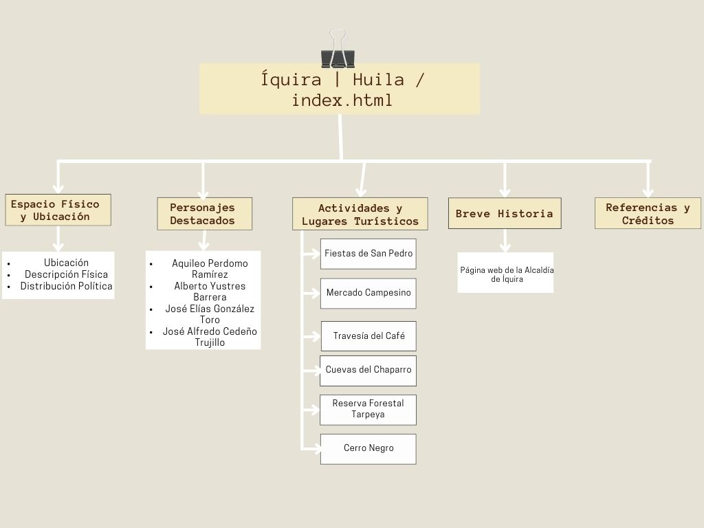

Ciudad Luz
Espacio Físico y Ubicación
Personajes Destacados
Actividades y Lugares Turísticos
Breve Historia
Diagrama
Referencias y Créditos
Mapa de Navegación

Fuentes
http://www.iquira-huila.gov.co/
https://www.municipio.com.co/municipio-iquira.html
https://es.wikipedia.org/wiki/%C3%8Dquira
https://www.lanacion.com.co/iquira-ciudad-luz-del-huila/
http://www.iquira-huila.gov.co/tema/municipio
https://www.sirhuila.gov.co/wp-content/uploads/2021/07/IQUIRA_15601_plan-de-desarrollo.pdf
https://www.funcionpublica.gov.co/web/sigep2/hdv/-/directorio/S2478593-0660-4/view
https://diariodelhuila.com/una-vida-dedicada-a-la-docencia-y-a-la-radio-comunitaria-de-la-que-es-lider/
https://www.lanacion.com.co/quiero-que-mi-pueblo-tenga-una-generacion-de-grandes-artistas/
https://colombia.travel/es/vacacional/ferias-y-fiestas/fiestas-de-san-pedro
https://opanoticias.com/huila/partici pe-de-la-segunda-travesia-del-cafe-en-bicicleta-por-territorio-huilense/18819
https://www.elnuevosiglo.com.co/articulos/07-01-2021-nuevo-registro-del-oso-de-anteojos-en-reserva-forestal-tarpeya-en-iquira
https://iquiraaparadisetolive.blogspot.com/search?q=montes+altos
https://iquiralightcity.blogspot.com/search?q=montes+altos
Alcaldía Municipal de Íquira. (2018). DOCUMENTO DE ANALISIS DE SITUACION DE SALUD CON EL MODELO DE LOS DETERMINANTES SOCIALES DE SALUD DEL MUNICIPIO DE IQUIRA 2018. Secretaría de Salud de Íquira.
Créditos
Jaime Humberto Toro Vallejo
Yadnolver Correa Tamayo
Gerardo Zúñiga Osso
Leonel Zúñiga Osso
Laura Sofía Tamayo Zúñiga